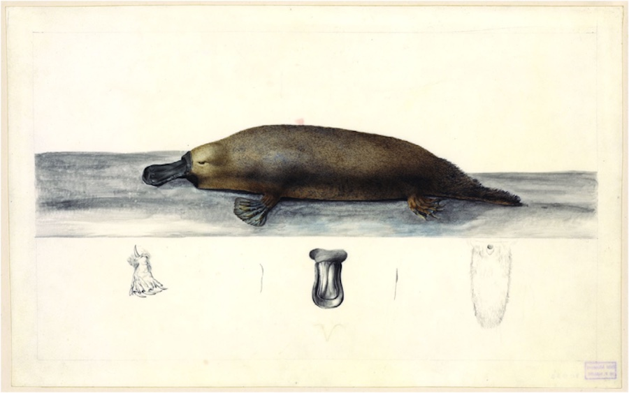
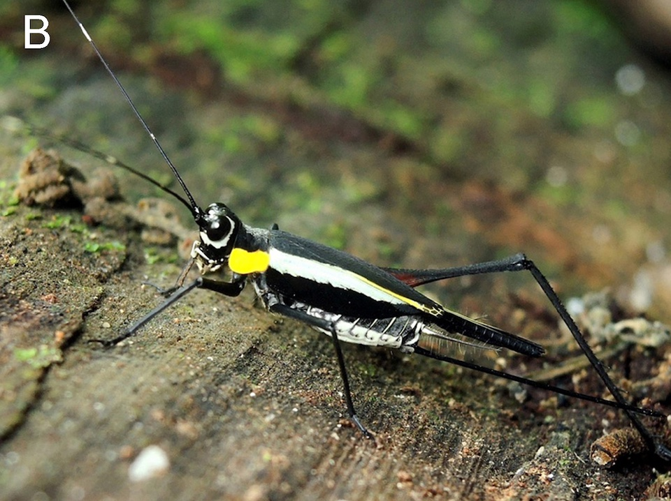

The Plazi Newsletter

The platypus (Ornithorhynchus anatinus), sometimes referred to as the duck-billed platypus, is a semiaquatic, egg-laying mammal endemic to eastern Australia, including Tasmania. The platypus is the sole living representative of its family (Ornithorhynchidae) and genus (Ornithorhynchus), though a number of related species appear in the fossil record.
Together with the four species of echidna, it is one of the five extant species of monotremes, the only mammals that lay eggs instead of giving birth to live young; they are all native to Australasia.
Wikipedia contributors. (2021, August 5). Platypus. In Wikipedia, The Free Encyclopedia. Retrieved 10:31, August 5, 2021, from https://en.wikipedia.org/wiki/PlatypusSpecies of the month

Nisitrus Hughtani n. sp., 2021
News
Another milestone in the development of modern biology was the introduction of the standardization resulting from comparative and reference works.
Publications
Rivera-Quiroz A, Petchaard B, Miller J A 2020. Mining data from legacy taxonomic literature and application for sampling spiders of the Teutamus group (Araneae; Liocranidae) in Southeast Asia. Scientific Reports 10: 15787. doi: 10.1038/s41598-020-72549-8
Dimitrova M, Poelen J, Zhelezov G, Georgiev T, Agosti D, Penev L 2020. Semantic publishing enables text mining of biotic interactions. Biodiversity Information Science and Standards 4: e95036. doi: 10.3897/biss.4.59036
Events
A change in paradigm: From publications to publishing building blocks of digital accessible biodiversity knowledge at the 22nd Meeting of the GfBS together with the Muséum nationale d’Histoire de Paris.